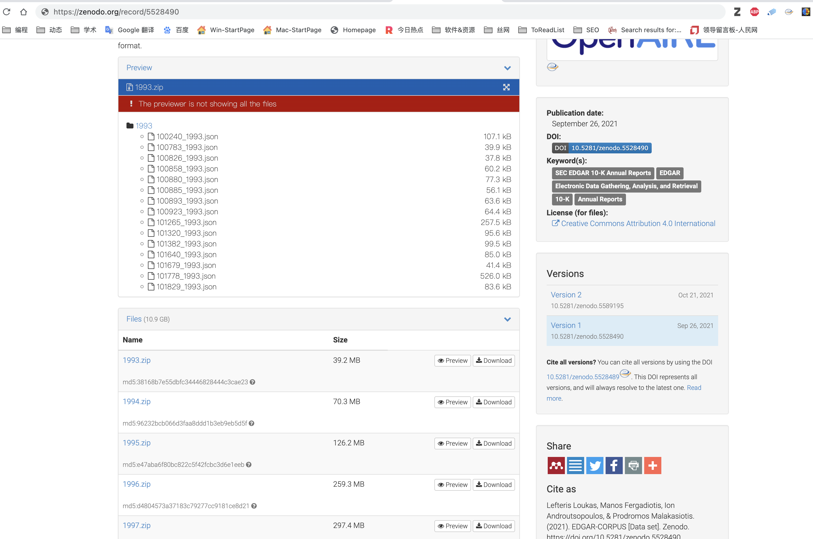
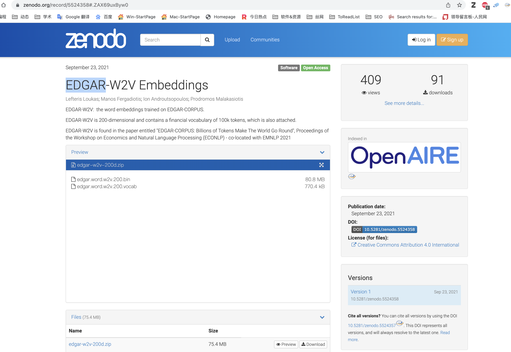

EDGAR 是美国证券交易委员会（SEC）的电子数据收集、分析和检索系统。EDGAR系统允许公众通过互联网访问公司提交给SEC的各种文件，例如注册声明、年度报告和其他披露文件。这些文件包括公司的财务信息、业务信息和其他关键信息，对于投资者和研究人员来说非常有用。
金融等方向的同学，如果想用 词嵌入 技术开展研究， 可以考虑使用这个开源的数据集。
一、EDGAR-CORPUS
在 EMNLP 2021同时举办的经济与自然语言处理研讨会（ECONLP）论文集中， 发布了EDGAR-CORPUS，这是一个新颖的语料库，包括美国所有上市公司超过25年的年报。
所有报告都已下载，拆分为相应的项目（部分），并以清洁、易于使用的JSON格式提供。
1.1 下载数据
https://zenodo.org/record/5528490

1. 2 引用格式
Lefteris Loukas, Manos Fergadiotis, Ion Androutsopoulos, & Prodromos Malakasiotis. (2021). EDGAR-CORPUS [Data set]. Zenodo. https://doi.org/10.5281/zenodo.5528490
二、EDGAR-W2V Embeddings
EDGAR-W2V 是在 EDGAR-CORPUS 上训练的词嵌入模型。 它是一个200维的模型，包含 10 万个金融词汇。EDGAR-W2V的相关信息可以在题为“EDGAR-CORPUS: Billions of Tokens Make The World Go Round”的论文中找到，该论文发表于2021年EMNLP会议上的经济学和自然语言处理研讨会（ECONLP）。
1.1 下载模型
https://zenodo.org/record/5524358 
1. 2 引用格式
Lefteris Loukas, Manos Fergadiotis, Ion Androutsopoulos, & Prodromos Malakasiotis. (2021). EDGAR-W2V Embeddings. Zenodo. https://doi.org/10.5281/zenodo.5524358
三、代码
3.1 导入词汇表
vocab = open('edgar.word.w2v.200.vocab', encoding='utf-8').read().split('\n')
print('词汇量: ', len(vocab))
#显示前100个
print(vocab[:100])
Run
词汇量: 100000
['the',
',',
'of',
'.',
'and',
'to',
'NEWLINETOKEN',
'in',
'a',
'for',
......
'including',
'accounting',
'operating',
'1',
'fair',
'also',
'credit',
'capital',
'notes',
'securities',
'rate']
3.1 导入W2V模型文件
edgar.word.w2v.200.bin只存储了
from gensim.models.keyedvectors import KeyedVectors
edgar_wv = KeyedVectors.load_word2vec_format('edgar.word.w2v.200.bin',
binary=True,
unicode_errors='ignore')
查看某个词的词向量, 返回长度200维的向量
print(edgar_wv['stock'].shape)
edgar_wv['stock']
Run
(200,)
array([ 0.19913645, -0.06109103, -0.20294489, -0.3233174 , 0.33050874,
0.4720499 , 0.1584721 , -0.73845965, -0.320686 , -0.03934 ,
0.24570467, 0.33919033, -0.42398626, -0.0519694 , 0.5614962 ,
0.06250261, 0.12337335, 0.4284085 , -0.18471783, 0.27163157,
-0.25374356, -0.30515426, -0.53030056, 0.14488244, 0.23602249,
0.17834061, 0.5282402 , 0.35811898, 0.02480956, -0.27537134,
0.46796346, 0.14656937, -0.24058165, -0.02558263, 0.2823333 ,
0.13227813, -0.35262054, -0.3534915 , -0.08498703, 0.13652588,
0.19062333, -0.59584695, 0.4724787 , 0.0899151 , -0.30575767,
0.0894967 , -0.42695883, 0.14332667, 0.32162446, 0.5205731 ,
-0.34024504, -0.15563595, 0.09534936, -0.03550521, -0.24585967,
-0.70967376, 0.23757844, 0.19296522, -0.14549816, -0.34093133,
0.44992575, -0.31520963, -0.19251363, -0.2664489 , 0.22087495,
-0.0226051 , 0.02213453, -0.31526777, 0.02245333, 0.01845511,
0.4727852 , 0.0823371 , -0.28313273, -0.96016574, -0.34687626,
0.31235287, -0.2581088 , -0.7164211 , 0.6806588 , 0.31276935,
-0.166056 , -0.5558513 , 0.10650715, -0.34121472, 0.01264491,
0.3823984 , -0.6213977 , 0.532256 , -0.11913523, 0.22344823,
0.3172406 , -0.08887295, 0.14381133, 0.23814514, -0.09513577,
0.10691381, 0.13318019, -0.10131137, 0.51121044, -0.13446783,
-0.34249052, 0.21858525, -0.66716367, -0.1002802 , 0.1822924 ,
-0.17896068, 0.36693272, -0.26906306, 0.16348957, 0.309529 ,
-0.5283489 , 0.38473064, -0.4563293 , -0.36093566, 0.02899153,
-0.16942917, -0.24810787, 0.04769324, 0.07288674, 0.05372427,
-0.21368156, -0.2308374 , -0.47956762, 0.26331866, 0.08796341,
0.0316316 , -0.04519949, 0.03246075, -0.06966034, 0.08757813,
0.16438614, -0.16775173, -0.10321777, 0.21712255, 0.1252789 ,
-0.34793332, 0.01499637, -0.32516828, 0.15845637, -0.1023875 ,
-0.05895114, -0.08138125, 0.08420486, -0.18958494, -0.22417304,
0.5160968 , 0.13966903, 0.17438166, 0.13805066, -0.1817818 ,
0.09644702, -0.34120768, 0.36722133, -0.06767058, -0.3896219 ,
-0.1555085 , -0.07321457, -0.24285823, -0.23933856, 0.26198393,
-0.12067977, 0.4152437 , -0.5361226 , 0.02143142, -0.47723222,
-0.27638227, -0.272431 , 0.27474684, 0.02058701, 0.398542 ,
0.12495182, -0.43948382, -0.41649124, -0.10416509, -0.013862 ,
0.2630676 , 0.0534305 , 0.26379627, -0.33174622, 0.30189517,
0.13504176, -0.09992695, 0.6300687 , -0.14120325, -0.04877585,
0.3973992 , 0.50578755, 0.07440792, -0.10353652, -0.60702443,
-0.09498709, 0.1284441 , -0.13405691, -0.19467972, -0.09931252,
-0.28807166, -0.49167937, 0.501096 , 0.41336802, -0.4281704 ],
dtype=float32)
四、相关内容
如果想了解更多词嵌入(或词向量)信息，可以阅读:
- 转载 | 大数据时代下社会科学研究方法的拓展——基于词嵌入技术的文本分析的应用
- 转载 | 从符号到嵌入：计算社会科学的两种文本表示
- 词嵌入技术在社会科学领域进行数据挖掘常见39个FAQ汇总
- 词嵌入测量不同群体对某概念的态度(偏见)
- Management Science | 使用网络算法识别创新的颠覆性与否
- 可视化 | 词嵌入模型用于计算社科领域刻板印象等信息（含代码）
- PNAS | 使用语义距离测量一个人的创新力(发散思维)得分
- 豆瓣影评 | 探索词向量妙处
- whatlies库 | 可视化词向量
- 中文词向量资源汇总 & 使用方法
- NLP资源 | 汽车、金融等9大领域预训练词向量模型下载资源
- 数据集 | 多语言对齐词向量预训练模型